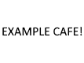

Starters | Main Courses | Desserts
- Chestnut and Mushroom Goujons (v)
- Goat Cheese Salad (v)
- Honey Soy Chicken Kebabs
- Seafood Salad
Back to top
- Spinach and Ricotta Roulade (v)
- Beef Tournados with Mustard and Dill Sauce
- Roast Chicken Salad
- Icelandic Cod with Parsley Sauce
- Mushroom Wellington (v)
Back to top
- Lemon Sorbet (v)
- Chocolate Mud Pie (v)
- Pecan Pie (v)
- Selection of Fine Cheeses from Around the World
Back to top
Items marked with a (v) are suitible for vegetarians.